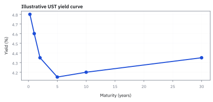
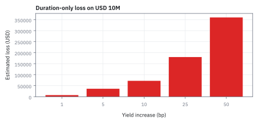
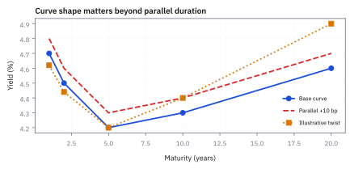

18.2 The Yield Curve, Duration, and Convexity
ราคาพันธบัตรเป็นเส้นโค้งที่ลดลงเมื่อ yield ขึ้น duration คือความชันของเส้นนั้น convexity คือความโค้ง และทั้งสองตัวยังพลาดเมื่อเส้นอัตราบิดแทนที่จะขยับทั้งเส้น
พันธบัตรอายุ 3 ปี จ่ายคูปอง 4% ต่อปี (\$40 ต่อหน้าตั๋ว \$1,000) ซื้อขายที่ yield 5% ราคา \$972.77 เทรดเดอร์ถามว่า ถ้า yield ขึ้น 1 จุดเป็น 6% จะขาดทุนกี่เปอร์เซ็นต์ คนใหม่ตอบว่า 3% เพราะอายุ 3 ปี ถูกไหม และถ้า yield ลง 1 จุดแทน จะได้กำไรเท่ากับที่เสียไหม
ลองตอบก่อนเปิดเฉลย
ไม่ถูกทั้งสองข้อ ราคาจริงเหลือ \$946.54 คือลด 2.696% ไม่ใช่ 3% เพราะคูปองสองก้อนกลับมาก่อนปีที่ 3 ความไวที่ถูกคือ modified duration 2.7470 ซึ่งทายได้ \$946.05 และเมื่อเติม convexity ได้ \$946.55 ห่างของจริงไม่ถึงหนึ่งเซนต์ ถ้า yield ลงเป็น 4% ราคาขึ้นเป็น \$1,000.00 พอดี ได้ \$27.23 มากกว่าที่เสีย \$26.23 ความไม่สมมาตรนี้คือ convexity
ภาพรวมก่อนลงสูตร
หน้า time value of money ย้ายเงินข้ามเวลาด้วยอัตราเดียว พอเอาไปใช้กับพันธบัตรจริงมีสองเรื่องต้องเพิ่ม เรื่องแรก เงินที่มาคนละปีคิดลดด้วยอัตราคนละตัวตามเส้นอัตรา (yield curve) เรื่องที่สอง โต๊ะพันธบัตรต้องรู้ทุกวันว่าถ้าอัตราขยับ พอร์ตได้เสียเท่าไร โดยไม่ต้องคิดราคาใหม่ทุกตัวทุกครั้ง
รูปด้านล่างคือทั้งเรื่องในภาพเดียว ราคาพันธบัตรเป็นเส้นโค้งที่ลดลงเมื่อ yield ขึ้น duration คือความชันของเส้นสัมผัสที่จุดปัจจุบัน ใช้ทายราคาเมื่อ yield ขยับนิดเดียว convexity คือช่องว่างระหว่างเส้นโค้งกับเส้นสัมผัส ซึ่งกว้างขึ้นเมื่อขยับไกล และอยู่ด้านบนเสมอ แปลว่าเส้นตรงทายราคาต่ำเกินไปทั้งขาขึ้นและขาลง
หน้านี้จะสร้างทุกชิ้นจากเงินสดทีละก้อน ตั้งราคาบนเส้นอัตรา ย่อเหลือ yield ตัวเดียว หาอนุพันธ์อันดับหนึ่งได้ duration อันดับสองได้ convexity แปลงเป็นเงินด้วย DV01 แล้วลอง hedge พันธบัตร 3 ปีด้วยพันธบัตร 10 ปี เพื่อดูว่า hedge นั้นเหลือความเสี่ยงอะไร
รูป — เส้นราคาเทียบ yield กับเส้นสัมผัสของ duration
ศัพท์ที่ใช้ในหัวข้อนี้
- Yield curve และ zero rate (spot rate)
- yield curve คือเส้นที่บอกอัตราดอกเบี้ยของแต่ละอายุในวันเดียวกัน zero rate คืออัตราสำหรับเงินก้อนเดียวที่อายุนั้น ใช้คิดลดเงินแต่ละก้อนด้วยอัตราของอายุตัวเอง
- Forward rate
- อัตราที่ตกลงวันนี้สำหรับการกู้ยืมในช่วงเวลาข้างหน้า เช่นจากปีที่ 1 ถึงปีที่ 2 หาได้จาก zero rate สองตัว ใช้อ่านว่าตลาดล็อกอัตราในอนาคตไว้เท่าไร
- Yield to maturity (YTM)
- อัตราเดียวที่ถ้าใช้คิดลดเงินทุกก้อนของพันธบัตรแล้วได้ราคาตลาดพอดี ตลาดใช้ quote พันธบัตรเป็นตัวเลขเดียว แต่เป็นค่าเฉลี่ยของเส้นอัตรา ไม่ใช่อัตราของอายุใดอายุหนึ่ง
- Macaulay และ modified duration
- Macaulay คือเวลารอเฉลี่ยของเงินถ่วงด้วย PV มีหน่วยเป็นปี modified คือ Macaulay หารด้วย $1+y$ และบอกว่า yield ขึ้น 1 จุด ราคาลงราวกี่เปอร์เซ็นต์
- Convexity
- ความโค้งของราคาเทียบ yield (อนุพันธ์อันดับสองหารด้วยราคา) ใช้แก้ค่าทายของ duration เมื่ออัตราขยับมาก และบอกว่าพันธบัตรธรรมดาได้เปรียบทั้งขาขึ้นและขาลง
- Basis point (bp) และ DV01
- 1 bp คือ 0.01 จุด หรือ 0.0001 DV01 (dollar value of 01) คือเงินที่พอร์ตได้เสียเมื่อ yield ขยับ 1 bp ใช้บวกความเสี่ยงข้ามพันธบัตรหลายตัวเป็นเงินก้อนเดียว
- Parallel shift และ twist
- parallel shift คือทุกอายุขยับเท่ากัน twist คือระยะสั้นกับระยะยาวขยับคนละทาง duration ตัวเดียวรับมือได้แค่แบบแรก
สัญลักษณ์และหน่วย
| สัญลักษณ์ | ความหมาย | หน่วย |
|---|---|---|
| $CF_i,\ t_i$ | เงินสดก้อนที่ $i$ และเวลาที่ได้ | ดอลลาร์, ปี |
| $P,\ PV_i,\ w_i$ | ราคาพันธบัตร PV ของก้อนที่ $i$ และน้ำหนัก $PV_i/P$ | ดอลลาร์, ดอลลาร์, ไม่มีหน่วย |
| $y,\ z(t)$ | yield to maturity และ zero rate ของอายุ $t$ (ทบต้นรายปี) | ต่อปี |
| $D_{\rm mac},\ D_{\rm mod}$ | Macaulay และ modified duration | ปี |
| $C$ | convexity | ปี$^2$ |
| $\Delta y$ | การขยับของ yield (1 bp = 0.0001) | ต่อปี |
| $V$ | มูลค่าตลาดของตำแหน่ง | ดอลลาร์ |
ขั้นที่ 1 — ลองด้วยมือ: พันธบัตรสองปีเมื่อ yield ขึ้น 1 จุด
ก่อนมีสูตร เอาพันธบัตรสมมติที่จ่าย \$4 ปีที่ 1 และ \$104 ปีที่ 2 (ตัวเดียวกับในหน้า time value of money ซึ่งมีราคา \$98.14 ที่ 5%) มาคิดราคาใหม่ที่ 6% แล้วดูว่าตัวเลขตัวเดียวทายการตกได้ใกล้แค่ไหน ตัวเลขนั้นคือเวลารอเฉลี่ยของเงิน ถ่วงด้วย PV ของแต่ละก้อน
ก้อนปีที่ 1 มีน้ำหนัก 3.88% ของราคา ก้อนปีที่ 2 มี 96.12% เวลารอเฉลี่ยจึงเป็น 1.96 ปี ไม่ใช่ 2 ปี หารด้วย 1.05 แล้วได้ 1.87 ซึ่งทายว่า yield ขึ้น 1 จุด ราคาลง 1.87%
ของจริงลด 1.84% ค่าทายเส้นตรงพลาดไป 0.026 จุด ในทางที่เข้าข้างคนถือ คือราคาตกน้อยกว่าที่เส้นตรงบอก ส่วนต่างนี้คือความโค้งที่จะวัดเป็น convexity ส่วนตัวหาร 1.05 มาจากไหน การหาอนุพันธ์ของราคาจะทำให้เห็นเอง
ขั้นที่ 2 — ราคาบนเส้นอัตรา: เงินแต่ละก้อนใช้อัตราของอายุตัวเอง
ในตลาด เงินหนึ่งปีกับเงินสามปีไม่ได้คิดลดด้วยอัตราเดียวกัน ราคาพันธบัตรจึงเป็นผลบวกของเงินแต่ละก้อนคูณ discount factor ของอายุนั้น การบวกกันได้ไม่ใช่แค่พีชคณิต แต่เป็นข้อบังคับของตลาดที่เรียกว่า linear pricing ถ้าราคาทั้งใบต่ำกว่าผลบวกของชิ้นย่อย ให้ซื้อทั้งใบแล้วขายเงินแต่ละก้อนแยก (ตลาดสหรัฐฯ แยกขายได้จริงในชื่อ STRIPS) เงินในอนาคตหักล้างกันหมด เหลือกำไรวันนี้ ถ้าสูงกว่าก็ทำกลับทิศ
ตัวอย่างสมมติ อ่านเส้นในรูปด้านล่างเป็น zero rate ได้ 1 ปี 4.60% และ 2 ปี 4.35% อายุ 3 ปีไม่มีบนเส้น จึงลากเส้นตรงระหว่างจุด 2 ปีกับ 5 ปี ไปหนึ่งในสามของทาง พันธบัตร 3 ปีคูปอง 4% จึงมีราคา \$992.02
สองแถวสุดท้ายอ่านเส้นเดียวกันอีกแบบ ฝากสองปีที่ $z_2$ ต้องได้เท่ากับฝากปีแรกที่ $z_1$ แล้วต่ออีกปีที่อัตรา $f_{1,2}$ ที่ล็อกไว้วันนี้ ไม่อย่างนั้นจะมีคนกู้ทางหนึ่งไปฝากอีกทาง อัตราล่วงหน้าของปีที่สองจึงเป็น 4.10% ต่ำกว่าอัตราปีแรก นี่คือความหมายของเส้นที่ลาดลง ตลาดตั้งราคาราวกับว่าอัตราจะลดลง การสร้างเส้นนี้จากราคาตลาดจริงอยู่ในหน้า zero rate, forward rate และ bootstrapping
ทำไมอัตราต้องต่างกันตามอายุ มีคำอธิบายสามแบบที่ใช้ร่วมกัน คนชอบให้เงินคล่องตัวมากกว่าถูกผูกไว้นาน จึงต้องได้ค่าตอบแทนเพิ่มเพื่อยอมล็อกเงินระยะยาว ตลาดคาดการณ์ว่าอัตราระยะสั้นในอนาคตจะขึ้นหรือลง และผู้เล่นบางกลุ่มซื้อได้เฉพาะบางอายุ เช่นบริษัทประกันที่ต้องการพันธบัตรยาว
รูป — เส้นอัตราสมมติของพันธบัตรรัฐบาลสหรัฐฯ

ขั้นที่ 3 — ย่อทั้งเส้นเหลือ yield ตัวเดียว
ตลาด quote พันธบัตรด้วยตัวเลขเดียว คือ yield to maturity อัตรา $y$ ตัวเดียวที่ใส่แทนทุกอายุแล้วได้ราคาตลาดพอดี สมการนี้เป็นพหุนามกำลังสามของ $1/(1+y)$ ไม่มีสูตรปิดที่สะดวก จึงหาด้วยการแบ่งครึ่งช่วง ราคาลดลงเมื่อ $y$ เพิ่ม ถ้าราคาที่ $y$ กลางช่วงสูงกว่าเป้า ให้ขยับ $y$ ขึ้น
YTM 4.2893% อยู่ใกล้อัตรา 3 ปี 4.2833% มาก เพราะเงินก้อนปีที่ 3 คิดเป็น 92% ของราคา YTM จึงเป็นค่าเฉลี่ยของเส้นอัตรา ถ่วงด้วยว่าเงินของพันธบัตรอยู่ที่อายุไหน พันธบัตรสองตัวที่อายุเท่ากันแต่คูปองต่างกันจึงมี YTM ต่างกันได้บนเส้นเดียวกัน
ทำไมตลาดยังชอบ YTM ทั้งที่หยาบ เพราะมันย่อหน้าตั๋ว คูปอง อายุ และคุณภาพผู้ออกไว้ในตัวเลขเดียว ผู้ออกที่คุณภาพต่ำกว่า (เครดิต BBB เทียบกับ AAA) ต้องขายราคาต่ำกว่า YTM จึงสูงกว่า และ YTM ขยับตามอัตราตลาดตรง ๆ
แถวสุดท้ายคือกติกาจริงของพันธบัตรรัฐบาลสหรัฐฯ ซึ่งจ่ายคูปองทุกหกเดือน คูปองครึ่งปี $c$ หน้าตั๋ว $F$ และ quote yield $\lambda$ แบบทบต้นครึ่งปี ถ้าพันธบัตรของหน้านี้จ่าย \$20 ทุกหกเดือนที่ $\lambda=5\%$ ราคาเป็น \$972.46 แทน \$972.77 หน้านี้ใช้คูปองรายปีเพื่อให้เลขน้อย ทุกสูตรข้างล่างใช้ได้เหมือนเดิมเมื่อนับงวดเป็นครึ่งปี ส่วนที่เหลือของหน้าใช้ YTM ตัวเดียว และสมมติตามโจทย์เปิดหน้าว่าพันธบัตรนี้ซื้อขายที่ $y=5\%$ เพื่อให้เลขกลม
ขั้นที่ 4 — พันธบัตร 3 ปีที่ yield 5%: ราคาและน้ำหนักของแต่ละก้อน
โจทย์ให้อะไรมาบ้าง: คูปอง \$40 ปลายปีที่ 1 และ 2 ปลายปีที่ 3 ได้ \$1,040 (คูปองกับเงินต้น) yield 5% ต่อปี
คำตอบ: ราคา \$972.7675 ต่ำกว่าหน้าตั๋ว \$27.23 เพราะคูปอง 4% ต่ำกว่า yield 5% เงินก้อนสุดท้ายหนัก 92.35% ของราคา
ตรวจเองใน 10 วินาที: น้ำหนักสามตัวรวมกันได้ 1.000000 และถ้าคูปองเท่ากับ yield ราคาต้องเท่าหน้าตั๋ว ที่ yield 4% ราคาคือ \$1,000.00 พอดี
รูป — duration คือจุดสมดุลของเงินบนเส้นเวลา
ขั้นที่ 5 — duration คืออนุพันธ์ของราคา
อยากรู้ว่าราคาเปลี่ยนเท่าไรเมื่อ $y$ ขยับนิดเดียว สิ่งที่ต้องการคือ $dP/dy$ หารด้วย $P$ เพื่อให้เป็นเปอร์เซ็นต์ หาอนุพันธ์ทีละก้อน เลขยกกำลัง $-t_i$ หล่นลงมาเป็นตัวคูณ แล้วสิ่งที่เหลือคือ $PV_i$ พอดี
$\sum_i t_iPV_i/P$ คือเวลาเฉลี่ยที่ถ่วงด้วยน้ำหนัก $w_i=PV_i/P$ หรือจุดสมดุลในรูปคานด้านบน ชื่อ “อายุเฉลี่ย” จึงไม่ได้ตั้งลอย ๆ มันหล่นออกมาจากอนุพันธ์เอง ตัวหาร $1+y$ มาจากกำลังที่ลดลงหนึ่ง ซึ่งเป็นที่มาของ 1.05 ในพันธบัตรสองปีด้านบน
ทำไม duration มีหน่วยเป็นปีทั้งที่เป็นความไว เพราะอัตรามีหน่วยต่อปี ความไว “เปอร์เซ็นต์ต่ออัตรา” จึงมีหน่วยเป็นปีพอดี แถวสุดท้ายคือการประมาณด้วยเส้นสัมผัส แบบเดียวกับเงื่อนไขอันดับหนึ่งจาก gradient ซึ่งคือเส้นประส้มในรูปภาพรวม ใช้ได้ดีเมื่อ $\Delta y$ เล็ก ส่วนที่คลาดคือความโค้ง
ขั้นที่ 6 — duration และ DV01 ของพันธบัตร 3 ปี
โจทย์ให้อะไรมาบ้าง: น้ำหนักสามตัวที่เพิ่งได้ $y=5\%$ และตำแหน่งที่ถือมีมูลค่าตลาด \$100 ล้าน
คำตอบ: เวลารอเฉลี่ย 2.8844 ปี modified duration 2.7470 ใบละ \$0.2672 ต่อ bp และตำแหน่ง \$100 ล้านได้เสีย \$27,470 ต่อ bp (ค่าเต็ม 27,470.28)
ตรวจเองใน 10 วินาที: $D_{\rm mac}$ ต้องอยู่ต่ำกว่าอายุ 3 ปีเล็กน้อย เพราะคูปองสองก้อนหนักรวมแค่ 7.6% และ 1 bp ของ \$100 ล้านคือ \$10,000 คูณ 2.747 ได้ \$27,470
ขั้นที่ 7 — convexity คืออนุพันธ์อันดับสอง และทำไมเป็นบวก
พันธบัตรสองปีด้านบนบอกแล้วว่าเส้นตรงทายราคาตกมากเกินไป เติมพจน์อันดับสองของ Taylor ก็จะได้ความโค้ง หาอนุพันธ์ของ $dP/dy$ ซ้ำอีกครั้ง กำลัง $-t_i-1$ หล่นลงมาคูณกับ $-t_i$ ที่มีอยู่ เครื่องหมายลบสองตัวคูณกันเป็นบวก
ถ้าเงินทุกก้อนเป็นบวกและไม่เปลี่ยนตามอัตรา ทุกพจน์ของ $C$ เป็นบวก และ $(\Delta y)^2$ เป็นบวกทั้งขาขึ้นขาลง พจน์นี้จึงบวกคืนให้เสมอ ราคาตกน้อยกว่าเส้นตรง และขึ้นมากกว่าเส้นตรง ในรูปภาพรวมคือเส้นน้ำเงินอยู่เหนือเส้นประทั้งสองข้าง
ถ้าคิดลดแบบต่อเนื่อง $P=\sum_i CF_ie^{-yt_i}$ อนุพันธ์ไม่มีตัวหาร $1+y$ จึงได้ $D_{\rm mod}=D_{\rm mac}$ และ $C=\sum_i t_i^2PV_i/P$ ตัวเลขต่างกันเล็กน้อยตามกติกาทบต้น ต้องใช้กติกาเดียวกับที่ใช้ quote yield
ขั้นที่ 8 — yield ขึ้นและลง 1 จุด: เส้นตรง เส้นโค้ง และของจริง
โจทย์ให้อะไรมาบ้าง: พันธบัตร 3 ปีราคา 972.7675 $D_{\rm mod}=2.7470$ และ $\Delta y=\pm0.01$ ใช้ $PV_i$ ทั้งสามก้อนที่คิดไว้แล้ว
คำตอบ: $c_2$ คือพจน์ convexity เป็นสัดส่วนของราคา แถว $P_{+}$ คือ yield ขึ้น 1 จุด แถว $P_{-}$ คือลง 1 จุด ในแต่ละแถว ตัวแรกคือ duration อย่างเดียว ตัวที่สองเติม convexity ตัวที่สามคือคิดราคาใหม่จริง ที่ +1 จุด เส้นตรงพลาด \$0.4944 พจน์ convexity บวกคืน \$0.5022 เหลือพลาดแค่ \$0.0078 คือปิดช่องว่างได้ 98.4% ที่ −1 จุด ได้ \$27.23 ขณะที่ +1 จุดเสีย \$26.23
ตรวจเองใน 10 วินาที: ที่ 4% คูปองเท่ากับ yield ทุกปีคูปอง \$40 จ่ายดอกเบี้ยของ \$1,000 พอดี ราคาจึงต้องเป็น \$1,000 ตรงกับแถวสุดท้าย
ขั้นที่ 9 — แปลงเป็นเงิน: พอร์ต \$10 ล้าน เมื่อ yield ขึ้น 10 bp
โจทย์ให้อะไรมาบ้าง: ตำแหน่งพันธบัตรรัฐบาลสหรัฐฯ สมมติ มูลค่า \$10 ล้าน $D_{\rm mod}=7.2$ $C=68$ yield ขึ้นทั้งเส้น 10 bp คือ $\Delta y=0.001$
คำตอบ: ขาดทุนราว \$71,660 เส้นตรงให้ \$72,000 และ convexity คืน \$340 หรือ 0.5% ของขาดทุน ที่ 10 bp จึงเล็ก แต่พจน์กำลังสองโตร้อยเท่าเมื่อขยับสิบเท่า ที่ 100 bp จะเป็น \$34,000
ตรวจเองใน 10 วินาที: DV01 \$7,200 คูณ 10 bp ได้ \$72,000 ตรงกับส่วนเส้นตรง
รูป — ขาดทุนตาม duration อย่างเดียวของพอร์ต \$10 ล้าน

ขั้นที่ 10 — hedge ด้วย DV01: ขนาดที่ทำให้ความไวรวมเป็นศูนย์
ถือพันธบัตร 3 ปีมูลค่า \$100 ล้าน อยากตัดความเสี่ยงอัตราออกด้วยการชอร์ตพันธบัตร 10 ปีคูปอง 5% ที่ yield 5% (ราคา \$1,000 พอดี) ต้องชอร์ตเท่าไร ให้ DV01 สองฝั่งเท่ากัน แล้วลองขยับอัตราดูว่าเหลืออะไร
เมื่อ DV01 เท่ากัน พจน์ duration ของสองฝั่งหักล้างกันพอดี ที่เหลือคือพจน์ convexity เราชอร์ตตัวที่โค้งกว่า (พันธบัตร 10 ปีมีเงินอยู่ไกลกว่า $C$ จึงใหญ่กว่า) จึงเสียทั้งขาขึ้นและขาลง คิดราคาใหม่จริงได้ −\$813.66 ที่ +10 bp, −\$77,829.00 ที่ +100 bp และ −\$85,988.39 ที่ −100 bp
ความไวเป็นศูนย์จึงไม่ได้แปลว่าไม่มีความเสี่ยง แค่ความเสี่ยงอันดับหนึ่งหายไป สิ่งที่เหลือเป็นพาราโบลาคว่ำ เหมือนคนที่ขาย option แล้ว hedge delta ไว้ ซึ่งจะเห็นอีกครั้งในกำไรขาดทุนของการ delta hedge
รูป — กำไรขาดทุนของ hedge ที่ DV01 เป็นศูนย์ เมื่อทั้งเส้นขยับขนาน
ขั้นที่ 11 — เมื่อเส้นอัตราบิด: hedge ที่ DV01 เป็นศูนย์ก็ยังได้เสียหลายแสน
ทุกขั้นที่ผ่านมาสมมติว่าทั้งเส้นขยับเท่ากัน ข้อมูลจริงไม่เป็นอย่างนั้น ในอัตรา swap ของสหรัฐฯ ช่วงมกราคม 2014 ถึงพฤษภาคม 2016 correlation ของการเคลื่อนไหวระหว่างอัตรา 2 ปีกับ 30 ปีมีแค่ราว 0.64 และการ regression อัตรา 5 ปีบนอัตรา 2 ปีได้ $R^2$ แค่ราว 4% ขณะที่อัตรา 15 ปีกับ 30 ปีเดินคู่กันแทบสนิท ($R^2$ ราว 99.5%) ระยะสั้นกับระยะยาวจึงขยับไม่เท่ากันบ่อย ลองใช้ twist สมมติ อายุ $t$ ขยับ $0.10(t-5)/5$ จุด หรือ $2(t-5)$ bp ให้แต่ละพันธบัตรขยับตามอายุของมัน (เป็นการประมาณ เพราะพันธบัตรหนึ่งตัวมีเงินหลายอายุ)
ขาถือได้เพราะ yield 3 ปีลง 4 bp ขาชอร์ตก็ได้เพราะ yield 10 ปีขึ้น 10 bp ทั้งสองขามี DV01 \$27,470 เท่ากัน ผลรวมจึงเป็น DV01 คูณส่วนต่างที่เปลี่ยนไป 14 bp คิดราคาใหม่จริงได้ +\$383,337.47 ถ้าเส้นบิดกลับทาง ขาดทุน \$385,840.34 ขนาดนี้คือสิบสี่เท่าของ DV01 ทั้งที่ “ความไวรวมเป็นศูนย์”
โต๊ะจริงจึงวัดความไวแยกตามอายุ (key-rate DV01) หรือแยกตามรูปแบบการขยับหลักของเส้น ซึ่งPCA หาได้ว่าคือระดับ ความชัน และความโค้ง
รูป — เส้นอัตราที่ขยับขนานกับเส้นที่บิด

ความผิดที่ให้คำตอบผิดแบบเงียบ ๆ
ใช้อายุแทน duration: พันธบัตร 3 ปีที่ +1 จุด ทายว่าราคาเหลือ $972.77(0.97)=\$943.58$ ของจริง \$946.54 พลาด \$2.96 ต่อใบ หรือราว \$304,000 ต่อ \$100 ล้าน
ใช้ Macaulay แทน modified: ทายว่าลด 2.884% แทน 2.747% ใหญ่เกินไป 5% ตรงกับตัวคูณ $1+y=1.05$ ที่ลืมหาร
ลืมเงินต้นในก้อนสุดท้าย: ใส่แค่ \$40 ในปีที่ 3 ได้ราคา \$108.93 แทน \$972.77 ผิดเกือบเก้าเท่า
เชื่อว่า DV01 เป็นศูนย์แปลว่าปลอดภัย: hedge ด้วยพันธบัตร 10 ปีเสีย \$77,829 เมื่ออัตราขึ้น 1 จุดทั้งเส้น และได้เสียราว \$385,000 เมื่อส่วนต่างระหว่าง yield 10 ปีกับ 3 ปีเปลี่ยน 14 bp
สับสนหน่วย: 1 bp คือ 0.0001 ไม่ใช่ 0.01 ใส่ $\Delta y=0.01$ แทน 10 bp ในพอร์ต \$10 ล้าน ได้ขาดทุน \$686,000 แทน \$71,660
ใช้สูตร convexity กับตราสารที่เงินสดเปลี่ยนตามอัตรา: พันธบัตรที่ผู้ออกไถ่ถอนก่อนได้ (callable) และ MBS ที่ผู้กู้บ้านรีไฟแนนซ์ได้ คืนเงินก่อนเมื่ออัตราลง ราคาจึงขึ้นได้ไม่มาก แต่เมื่ออัตราขึ้นไม่มีใครคืนก่อน ราคาตกเต็ม ๆ convexity จึงติดลบได้ สูตรด้านบนใช้ไม่ได้เพราะ $CF_i$ เปลี่ยนตาม $y$ ต้องใช้แบบจำลองการคืนเงินก่อนกำหนด
ใช้ทำอะไรบนโต๊ะจริง
รายงานความเสี่ยงประจำวันของโต๊ะพันธบัตรคือ DV01 รวม และ DV01 แยกตามช่วงอายุ ทุกตำแหน่งบวกกันเป็นเงินได้ การ hedge ใช้สัดส่วน DV01 แบบพันธบัตร 3 ปีกับ 10 ปีด้านบน แล้วตรวจความเสี่ยงที่เหลือด้วยการคิดราคาใหม่ทั้งเส้นภายใต้ฉากการขยับหลายแบบ กองทุนบำนาญและบริษัทประกันจับคู่ duration ของสินทรัพย์กับหนี้สินที่ต้องจ่ายในอนาคต และให้ convexity ของสินทรัพย์มากกว่า ซึ่งเรียกว่า immunization
พันธบัตรอีกชนิดที่ต้องรู้คือ floating rate bond ที่คูปองงวดถัดไปตั้งตามอัตราตลาดตอนต้นงวด ใช้เหตุผล no-arbitrage แบบเดียวกับราคาบนเส้นอัตรา (กู้และให้กู้ทีละงวดจนเงินสดในอนาคตแน่นอน) ได้ว่าในวันที่อัตรา reset ราคาเท่าหน้าตั๋วพอดีไม่ว่าอัตราจะเป็นเท่าไร duration ของมันจึงสั้นแค่ถึงวันที่ reset ครั้งถัดไป เช่นไม่เกิน 0.25 ปีถ้า reset ทุกสามเดือน นี่คือเหตุที่ swap ซึ่งแลกขาคงที่กับขาลอยตัว (swap rate และ swap curve) มีความไวเกือบทั้งหมดอยู่ที่ขาคงที่
โจทย์ตรวจความเข้าใจ
1. พันธบัตรไม่มีคูปองอายุ 5 ปี หน้าตั๋ว \$1,000 ที่ yield 5% ราคา duration และ convexity เท่าไร และถ้า yield ขึ้น 50 bp ราคาลดกี่เปอร์เซ็นต์ตามสามวิธี
เฉลย
ราคา $1{,}000/1.05^5=\$783.53$ มีก้อนเดียว จุดสมดุลจึงอยู่ที่ก้อนนั้น $D_{\rm mac}=5$ $D_{\rm mod}=5/1.05=4.7619$ $C=5(6)/1.05^2=27.2109$ ที่ $\Delta y=0.005$ เส้นตรงได้ $-4.7619(0.005)=-2.3810\%$ เติม convexity $+\tfrac12(27.2109)(0.005)^2=+0.0340\%$ ได้ $-2.3469\%$ ของจริง $1.05^5/1.055^5-1=-2.3473\%$
2. พอร์ตมูลค่า \$50 ล้าน $D_{\rm mod}=6.0$ $C=50$ ถ้า yield ขึ้น 75 bp ขาดทุนประมาณเท่าไร
เฉลย
$\Delta y=0.0075$ เส้นตรง $-6(0.0075)=-4.5\%$ คือ −\$2,250,000 convexity $\tfrac12(50)(0.0075)^2=0.140625\%$ คืน \$70,312.50 รวมขาดทุนราว \$2,179,687.50
3. กลับไปที่โจทย์เงินเกษียณในหน้า time value of money ทาง B (\$120,000 ต่อปี 12 ปี) และทาง C (\$45,000 โตปีละ 1% ตลอดกาล) ที่ 5% หา duration ของทั้งสอง แล้วใช้ duration กับ convexity ทาย C เมื่ออัตราขึ้นเป็น 8% เทียบกับของจริง −42.9%
เฉลย
B คิดน้ำหนักแบบพันธบัตร 3 ปีกับ 12 งวดได้ $D_{\rm mac}=5.9219$ ปี C คือ $P=c/(y-g)$ อนุพันธ์ $P'=-c/(y-g)^2$ จึง $D_{\rm mod}=1/(y-g)=25$ และ $D_{\rm mac}=1.05(25)=26.25$ ปี อนุพันธ์อันดับสอง $P''=2c/(y-g)^3$ ให้ $C=2/(y-g)^2=1{,}250$ ที่ $\Delta y=0.03$ เส้นตรงทาย −75% เติม convexity $+\tfrac12(1{,}250)(0.0009)=+56.25\%$ ได้ −18.75% ทั้งคู่ผิดไกลจาก −42.9% เพราะ 3 จุดใหญ่เกินไปสำหรับเงินที่รอเฉลี่ย 26 ปี Taylor สองพจน์ไม่พอ ต้องคิดราคาใหม่
คำนวณซ้ำด้วย JavaScript
เปิดดูโค้ด
const {pow} = Math;
// Price, Macaulay duration and convexity of fixed cash flows [t, amount] at one annual yield y.
function bond(list, y) {
let P = 0, tPV = 0, ttPV = 0;
for (const [t, c] of list) {
const pv = c / pow(1 + y, t);
P += pv; tPV += t * pv; ttPV += t * (t + 1) * pv;
}
const mac = tPV / P;
return {P, mac, mod: mac / (1 + y), convexity: ttPV / (P * (1 + y) ** 2)};
}
// Price on a curve: each flow discounted with its own zero rate z(t).
const onCurve = (list, z) => list.reduce((s, [t, c]) => s + c / pow(1 + z(t), t), 0);
// Yield that reproduces a price (bisection; price falls as yield rises).
function ytm(list, target) {
let lo = -0.5, hi = 1;
for (let k = 0; k < 200; k++) { const m = (lo + hi) / 2; if (bond(list, m).P > target) lo = m; else hi = m; }
return (lo + hi) / 2;
}
const coupon = (rate, years, face = 1000) =>
[...Array(years)].map((_, k) => [k + 1, face * rate + (k === years - 1 ? face : 0)]);
const two = [[1, 4], [2, 104]], three = coupon(0.04, 3), ten = coupon(0.05, 10);
const b2 = bond(two, 0.05), b3 = bond(three, 0.05), b10 = bond(ten, 0.05);
const shock = dy => ({
duration: b3.P * (1 - b3.mod * dy),
withConvexity: b3.P * (1 - b3.mod * dy + 0.5 * b3.convexity * dy * dy),
actual: bond(three, 0.05 + dy).P
});
// Hypothetical curve read as zero rates: 1y 4.60%, 2y 4.35%, 3y one third of the way to 5y 4.15%.
const z = t => ({1: 0.046, 2: 0.0435, 3: 0.0435 + (0.0415 - 0.0435) / 3})[t];
const curvePrice = onCurve(three, z);
// Hedge USD 100 million of the 3-year bond with a short 10-year par bond; reprice both legs.
const hedgeValue = 1e8 * b3.mod / b10.mod;
const book = (dy3, dy10) => 1e8 / b3.P * (bond(three, 0.05 + dy3).P - b3.P)
- hedgeValue / b10.P * (bond(ten, 0.05 + dy10).P - b10.P);
const twist = t => 0.001 * (t - 5) / 5; // 0.10 point times (t - 5) / 5
console.log({
two: {p5: b2.P, p6: bond(two, 0.06).P, mac: b2.mac, mod: b2.mod},
curve: {z3: z(3), price: curvePrice, ytm: ytm(three, curvePrice),
fwd12: 1.0435 ** 2 / 1.046 - 1}, // 4.1006%
three: {...b3, dv01Book: 1e8 * b3.mod * 1e-4}, // 2.8844, 2.7470, 10.3262
up100: shock(0.01), down100: shock(-0.01),
semiannual: bond(coupon(0.02, 6), 0.025).P, // 972.46
tenMillion: 1e7 * (-7.2 * 0.001 + 0.5 * 68 * 0.001 ** 2), // -71,660
ten: b10, hedgeValue, // 35,575,273
hedged: [-0.02, -0.01, 0.001, 0.01, 0.02].map(d => book(d, d)),
twist: [book(twist(3), twist(10)), book(-twist(3), -twist(10))],
exercises: {
zero: bond([[5, 1000]], 0.05),
book: 5e7 * (-6 * 0.0075 + 0.5 * 50 * 0.0075 ** 2),
offerB: bond([...Array(12)].map((_, k) => [k + 1, 120000]), 0.05).mac
}
});สิ่งที่ควรตอบได้หลังอ่าน
- ราคาพันธบัตรคือเงินแต่ละก้อนคูณ discount factor ของอายุตัวเอง (linear pricing) และ YTM คืออัตราเดียวที่ให้ราคาเดียวกัน (\$992.02 และ 4.2893% ในตัวอย่าง)
- duration คือ $-\frac1P\frac{dP}{dy}$ ซึ่งเท่ากับจุดสมดุลของเงินบนเส้นเวลาหารด้วย $1+y$ พันธบัตร 3 ปีคูปอง 4% ที่ 5% ได้ 2.8844 และ 2.7470 ไม่ใช่ 3
- convexity เป็นบวกสำหรับเงินสดคงที่ ที่ +1 จุด ปิดช่องว่างของเส้นตรงได้ 98.4% และทำให้ขาขึ้นได้มากกว่าขาลงเสีย (\$27.23 เทียบ \$26.23)
- DV01 แปลงความไวเป็นเงิน \$27,470 ต่อ bp ของ \$100 ล้าน และ hedge ด้วยพันธบัตร 10 ปีต้องชอร์ต \$35,575,273
- hedge ที่ DV01 เป็นศูนย์ยังเสียเป็นพาราโบลาเมื่ออัตราขยับมาก (\$77,829 ที่ +100 bp) และเสียหรือได้ราว \$385,000 เมื่อเส้นบิด 14 bp
หน้าถัดไป binomial tree pricing เปลี่ยนจากเงินสดที่รู้ล่วงหน้าเป็นเงินที่ขึ้นกับราคาหุ้น ใช้ต้นไม้สองกิ่งตั้งราคา option ด้วยการสร้างพอร์ตเลียนแบบ และคิดลดด้วย $1+r$ แบบเดียวกับหน้านี้